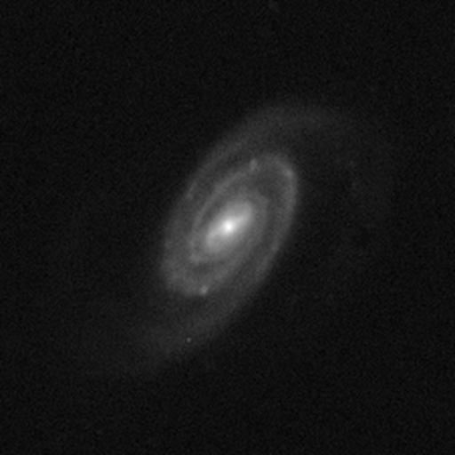 image_11-A_input.png (104 kB)
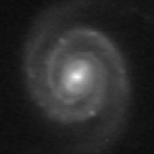 image_11-B_autoCrop.png (20 kB)
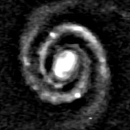 image_11-C_preproc.png (36 kB)
image_11-D_clusMask.png (4 kB)
image_11-E_hacArcs.png (4 kB)
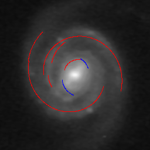 image_11-F_logSpiralArcs.png (32 kB)
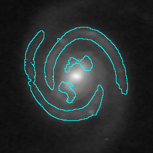 image_11-G_imgClusters-merged.png (36 kB)
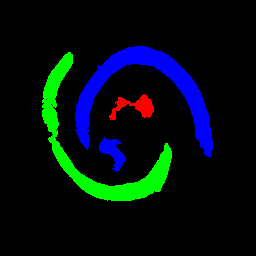 image_11-H_clusMask-merged.png (4 kB)
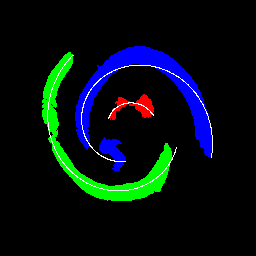 image_11-I_hacArcs-merged.png (4 kB)
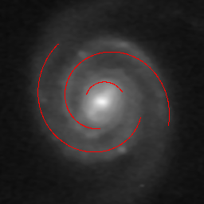 image_11-J_logSpiralArcs-merged.png (32 kB)
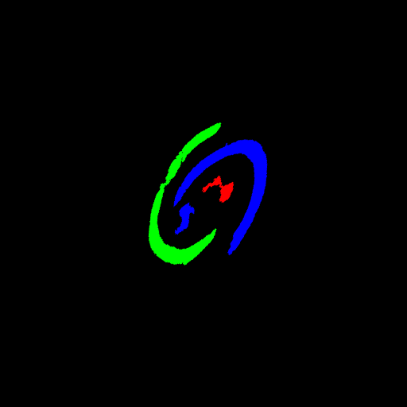 image_11-K_clusMask-reprojected.png (8 kB)
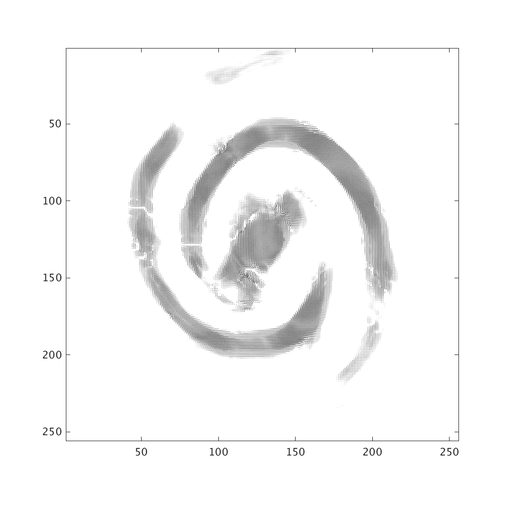 image_11-O_orientation-field.png (56 kB)
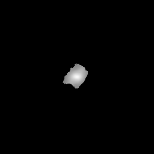 image_11-__deleted_cluster.png (4 kB)